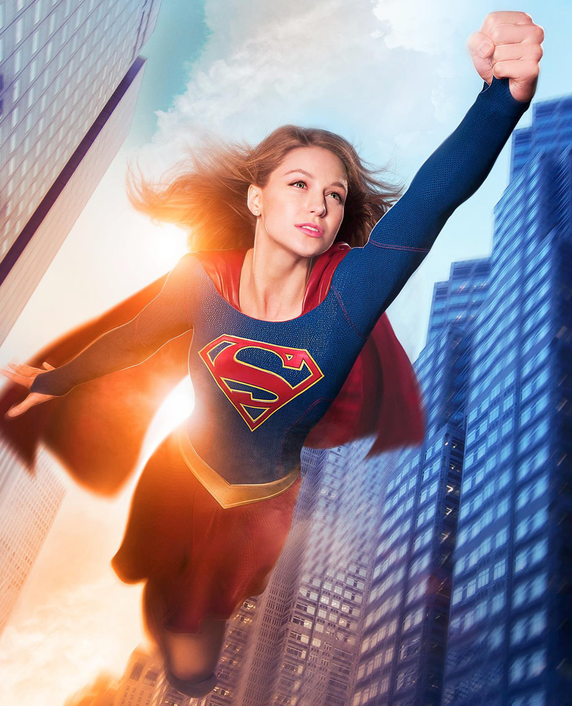

Superwoman is the name of several fictional characters from DC Comics. Most of them are, like Supergirl, women with powers similar to those of Superman. Detective Comics, Inc. trademarked the name to prevent competitors from using it. As was the practice, a publication produced solely for legal purposes was created with the title of Superwoman. The cover was a reproduction of More Fun Comics, with the interior being a reprint of the third issue. The first true appearance of Superwoman was in Action Comics.
